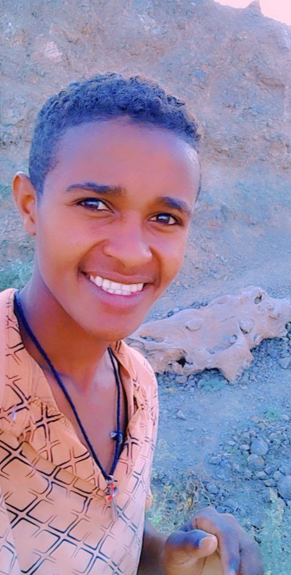

About Me
I am a dedicated Computer Science student with a strong foundation in software development and a passion for creating innovative digital solutions. My academic journey has equipped me with comprehensive knowledge in algorithms, data structures, and software engineering principles.
As a frontend developer, I specialize in building responsive, user-centric web applications using modern technologies. My expertise spans HTML5, CSS3, JavaScript ES6+, React, and various frontend frameworks. I'm committed to writing clean, efficient, and maintainable code that delivers exceptional user experiences.
Beyond technical skills, I bring strong problem-solving abilities, attention to detail, and a collaborative mindset to every project. I'm currently seeking internship opportunities to apply my academic knowledge in real-world settings and contribute to meaningful technology projects.
My goal is to bridge the gap between innovative design and robust functionality, creating web applications that not only look great but also perform exceptionally well. I'm continuously learning and staying updated with the latest industry trends and best practices.